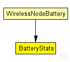
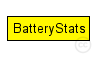

This documentation is released under the Creative Commons license
This documentation is released under the Creative Commons licensemodule for collecting battery statistics
The following diagram shows usage relationships between types. Unresolved types are missing from the diagram. Click here to see the full picture.
The following diagram shows inheritance relationships for this type. Unresolved types are missing from the diagram. Click here to see the full picture.
| Name | Type | Description |
|---|---|---|
| WirelessNodeBattery | compound module |
Standard host module for a wireless MiXiM host with configurable NIC, and OSI layers, and mobility module. Additional it includes a battery module plus statistics. |
| Name | Type | Default value | Description |
|---|---|---|---|
| notAffectedByHostState | bool | true | |
| debug | bool | false |
write per-activity and per-device statistics to omnetpp.sca (if false, only total energy and lifetime are written) |
| detail | bool | true |
subscribe to battery status and record time series data in omnetpp.vec (resolution depends on battery's publishDelta) |
| timeSeries | bool | false |
// // module for collecting battery statistics // simple BatteryStats { parameters: bool notAffectedByHostState = default(true); bool debug = default(false); // write per-activity and per-device statistics to omnetpp.sca // (if false, only total energy and lifetime are written) bool detail = default(true); // subscribe to battery status and record time series // data in omnetpp.vec (resolution depends on battery's // publishDelta) bool timeSeries = default(false); }
This documentation is released under the Creative Commons license